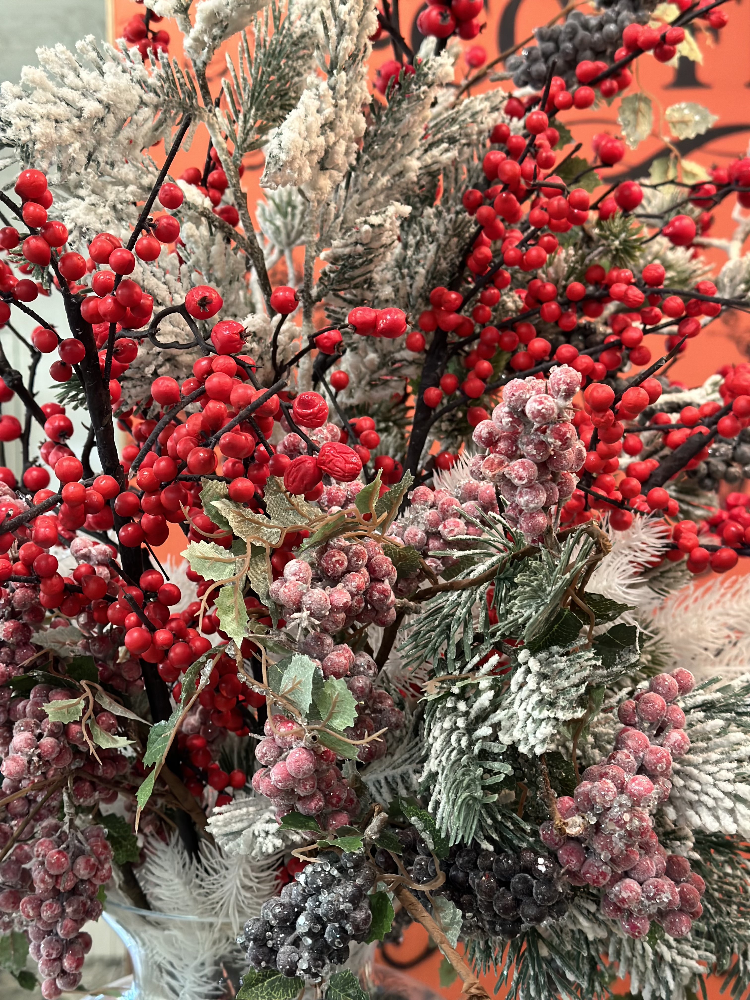
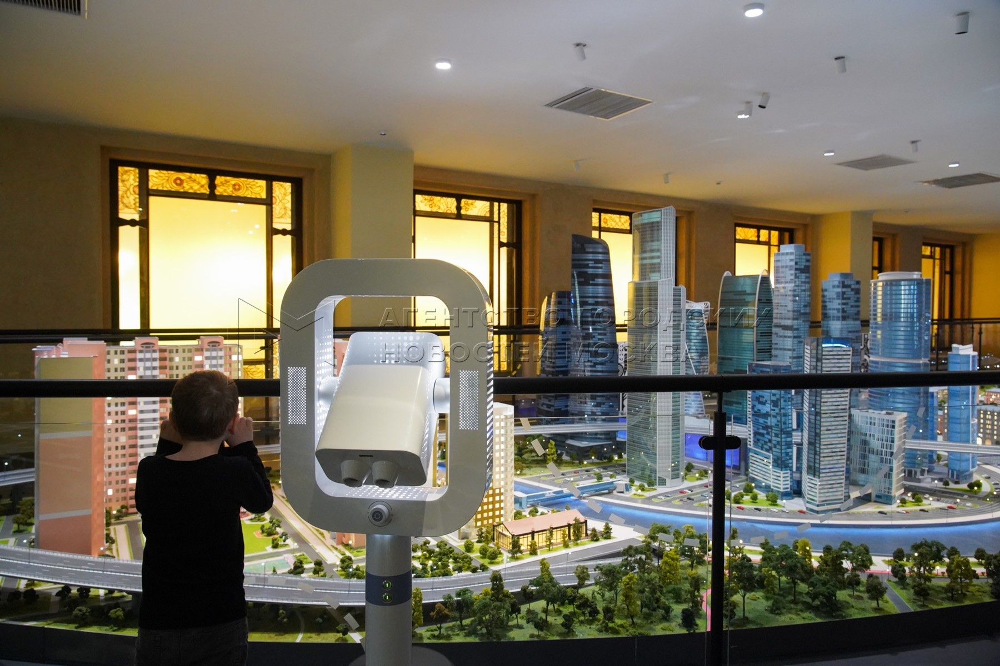
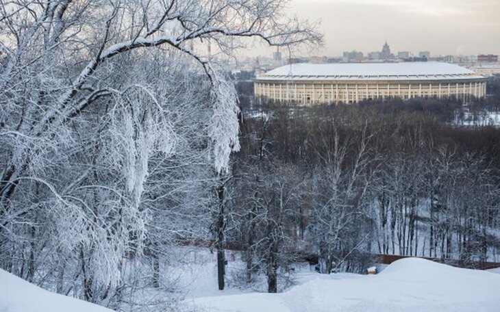
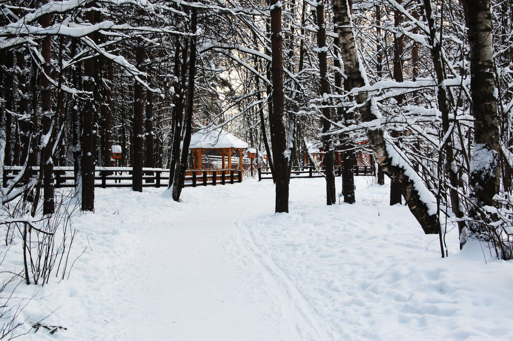
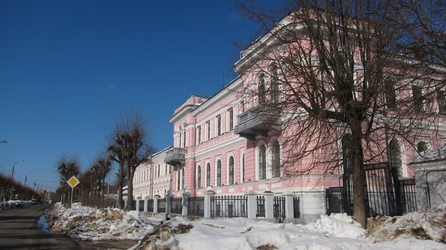

Сканди-мероприятия
-

Новогодний корпоратив клуба «По миру с палками»
12 декабря 2024г 19.00
НОВГОДНИЙ КОРПОРАТИВ «Кто боится Рождества?! Истоки праздника».
Друзья, мы подготовили для вас Новогодний сюрприз. Вкусный ужин и интересный квиз в нашей дружной компании. Конечно, главная тема - Рождество и Новогодние праздники!
Это будет ужин в формате игры, которую проведет легендарный Павел Юрасов, мы все давно ждали! Помогать в проведении мероприятия будет наша прекрасная Анна Ефимова. Все секреты мы выдавать не будем! Лишь скажем, что Новогодний ужин состоится в уютном «SIGNATURE restaurant» на Котельнической набережной.
Меню: салат (салат с хамоном/с киноа и креветками) и горячее блюдо (говяжьи щечки/палтус с пюре из цветной капусты). А также веселый квиз, историческая справка и новогоднее настроение. Напитки, десерты и т.п. заказываются на месте.
Условия:
Стоимость участия при регистрации до 1 декабря 5000 рублей, при регистрации с 1 по 10 декабря – 6000 рублей. Предоплата 100%. Возврату не подлежит, но в случае изменения обстоятельств свое участие можно предложить кому-то другому. При получении вашей заявки вы будете добавлены в организационный чат в телеграм.
ЗаписатьсяПодробнее -

СКАНДИ-КВЕСТ с посещением музея городского хозяйства Москвы
17 ноября 2024 9:30
Необычный формат сканди-квеста включает в себя спортивную прогулку для любителей скандинавской ходьбы по территории ВДНХ и парка Останкино и интерактивный квест в Музее городского хозяйства Москвы (павильон 5).
Музей городского хозяйства Москвы уникальное место, где мы узнаем как устроено коммунальное хозяйство Москвы. Здесь на столицу можно посмотреть глазами тех людей, чья ежедневная работа — делать ее комфортной, безопасной, яркой и доступной для всех. Интерактивные инсталляции позволят погрузиться в этот непростой процесс полностью.
Наш путь будет лежать от метро Ботанический сад к павильону 5. В 10.30 нас будут встречать в музее. С экскурсоводом пройдем по экспозиции и ответим на 30 вопросов. И не просто, а в виде графического дизайна. Без призов не уйдет никто. Мероприятие организовано только для нашей группы.
После посещения музея мы отправимся на прогулку в парк Останкино и насладимся видами усадьбы Останкино . Завершение прогулки можно сделать в исторической Пончиковой. Таких вкусных московских пончиков нет больше нигде.
Что нас ждет?
Пешеходный маршрут м.Ботанический сад – павильон 5 – парк Останкино ориентировочно 6 км
Квест в Музее городского хозяйства около 1,5 часов и самостоятельный осмотр экспозиции.
Небольшая тренировка на свежем воздухе.
Поедание вкусных пончиков (по желанию)
Продолжительность всего мероприятия полностью 4 – 5 часов ( при желании можно покинуть группу после квеста).
Инструктор Волосюк Маргарита
Стоимость: 1300р
ЗаписатьсяПодробнее -

SCANDI-ПОХОД ПО ЗЕЛЕНОМУ КОЛЬЦУ МОСКВЫ. Участок м.Молодежная - м.Воробьевы горы
1 декабря 2024г 10.00
Зелёное кольцо Москвы - это пешеходный маршрут протяжённостью 160 километров, который проходит по паркам и зелёным зонам с минимальными переходами по городским улицам и опоясывает таким образом Москву
На пути встречается множество достопримечательностей — есть возможность увидеть не просто зеленые парки, но и самые красивые виды города, исторические места и много интересных и неизвестных памятников столицы.
Маршрут подходит как для семейных прогулок, так и для тренировок спортсменов в беге, маунтинбайке, скандинавской ходьбе. Зимой — для занятий лыжами.
Автор маршрута Александр Советов.
Увидим парки:
Суворовский парк
Ворошиловский парк
Филевский парк
Парк Победы
Мосфильмовские пруды
Парк Воробьевы горы
Участок протяженностью около 19 км
Сократить маршрут можно в районе м.Филевский парк и м.Минская
Нас ждёт :
• Сканди-разминка
• Дыхательная гимнастика
• Поход с наслаждением и любовью
• Дружеские кофе/чайные паузы
• Растяжка в конце маршрута
Длительность около 6 часов
Участок можно будет пройти не полностью.
📍Одежда и обувь спортивная по погоде.
📍Скандинавские палки берем с собой и улыбку тоже.
📍Термосы с чаем и перекусы приветствуются.
Вся организационная информация будет в телеграмм-чате
Инструктор Волосюк Маргарита
Стоимость: 1100р
ЗаписатьсяПодробнее -

SCANDI-ПОХОД ПО ЗЕЛЕНОМУ КОЛЬЦУ МОСКВЫ. Участок м.Воробьевы горы – м.Тропарево
8 декабря 2024г 10.00
Зелёное кольцо Москвы - это пешеходный маршрут протяжённостью 160 километров, который проходит по паркам и зелёным зонам с минимальными переходами по городским улицам и опоясывает таким образом Москву
На пути встречается множество достопримечательностей — есть возможность увидеть не просто зеленые парки, но и самые красивые виды города, исторические места и много интересных и неизвестных памятников столицы.
Маршрут подходит как для семейных прогулок, так и для тренировок спортсменов в беге, маунтинбайке, скандинавской ходьбе. Зимой — для занятий лыжами.
Автор маршрута Александр Советов.
Увидим парки:
Парк Воробьевы горы
Парк 850-летия Москвы
Парк Никулинские аллеи
Парк Олимпийской деревни
Очаковские озера
Тропаревский лесопарк
Участок протяженностью около 18 км
Сократить маршрут можно в районе м.Проспект Вернадского и м.Озерная
Нас ждёт :
• Сканди-разминка
• Дыхательная гимнастика
• Поход с наслаждением и любовью
• Дружеские кофе/чайные паузы
• Растяжка в конце маршрута
Длительность около 6 часов
Участок можно будет пройти не полностью.
📍Одежда и обувь спортивная по погоде.
📍Скандинавские палки берем с собой и улыбку тоже.
📍Термосы с чаем и перекусы приветствуются.
Вся организационная информация будет в телеграмм-чате
Инструктор Волосюк Маргарита
Стоимость: 1100р
ЗаписатьсяПодробнее -

АВТОБУСНО-ПЕШЕХОДНАЯ ПРОГРАММА «УСАДЬБЫ СЕРПУХОВА. ИСТОРИЯ ДИНАСТИЙ»
15 декабря 2024г 9.00
В этой поездке мы познакомимся с историями династий Коншиных, Фирсановых, Солодовниковых, Варгиных и Мараевых, прославивших себя не только в родном городе, но и в Первопрестольной. С ними работали лучшие архитекторы конца XIX века.
Посетим и дворянские гнезда: Пущино-на-Наре и Троицкое, где закончила свой земной путь Е. Р. Дашкова, сердечная подруга, в хорошем смысле этого слова, Екатерины II. Роскошная усадьба А. В. Мараевой, ныне историко-художественный музей, тоже войдёт в наш маршрут, особняк был построен по проекту нашего любимого архитектора Р. И. Клейна.
Нас ждет удивительная информация от неутомимого экскурсовода Василия Злотникова. Для удобства перемещаться будем на комфортабельном микроавтобусе. Также для удобства будем использовать радиогиды.
Мы увидим:
- Дом Н. Н. Коншина; фабрику Коншиных;
- Усадьбу Соллогубов;
- Дворец купцов Кишкиных;
- Усадьбу купца Игнатова, путь к которой лежит через подвесной мост;
- Руины усадьбы Дашковой в селе Троицкое, фабрику, могилу Е. Р. Дашковой;
После плодотворной прогулки мы пообедаем в кафе «Русский чай» или подобном (не входит в стоимость).
Выезжаем от метро «Анино» в 9:00, возвращение к метро в 19:00.
Точное место встречи сообщим в организационном чате.
В стоимость входит экскурсионное обслуживание, трансфер на протяжении экскурсионного маршрута, использование радиогидов.
Дополнительно оплачивается трансфер до места встречи, обед, входные билеты и дополнительные экскурсии на исторических объектах (при необходимости).
Рекомендовано для любой возрастной категории и физической подготовки.
Организатор Волосюк Маргарита.
Стоимость: 8000р
ЗаписатьсяПодробнее -

SCANDI-поход "Встречаем Новый год"
29 декабря 2024г 10.00
Проводим Старый год активно и очень спортивно!
Для того чтобы походить в лесу совсем не обязательно уезжать за тридевять земель. Да по сугробам можно и не пролезть. Мы пойдём с вами по протоптанным дорожкам, да так, что вы и не заметите, что вы в Москве.
Стартовать будем от метро Печатники. По пути возможно заглянем на выставочную экспозиции в усадьбе Люблино, прогуляемся по Кузьминскому лесному массиву, заглянем в усадьбу Деда Мороза, устроим фото сессию на тропе сказок. Окончание маршрута метро Котельники
Протяжённость маршрута 15 км
Продолжительность около 6 часов.
Место встречи м.Печатники (точнее будет указано в организационном чате)
Маршрут Печатники - музей усадьба Люблино - Театральная школа - усадьба Кузьминки - Тропа сказок - метро Котельники
Наш маршрут начнётся от станции метро Печатники. Вскоре мы углубимся в парк усадьбы Люблино. Там возможно заглянем на одно из выставочных пространств. Все будет зависеть от нашего желания.
Дальше наш путь будет лежать по парковым тропинкам в усадьбу Кузьминки. Усадьба известна с XVIII века. Её владельцами были бароны Строгановы и князья Голицыны.
Остановимся на перекус в парковом кафе "Гренки". Термосы с чаем/кофе берем с собой и перекус тоже. Горячие блины можно купить в кафе.
Дальше отправимся на Тропу Сказок, где можно увидеть 65 фигур из разных сказок. После новогодней фотосессии пройдём часть маршрута по немноголюдному лесу. И закончим маршрут у метро Котельники около 17.00
По пути сделаем упражнения с палками для ещё большего насыщения кислородом.
Список необходимого снаряжения:
- скандинавские палки
- небольшой рюкзак для переноса личных вещей и перекуса
- одежда спортивная по погоде
- запасные носки
- фонарик налобный
- сидушка
- термос с горячим питьём
- перекус
- 2-3 шоколадных батончика (личный ходовой перекус)
Инструктор Волосюк Маргарита
Стоимость: 1200р
ЗаписатьсяПодробнее